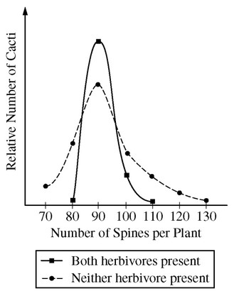

In a species of cactus, the number of spines on a plant is genetically determined. The graph above shows frequency distributions for populations of the cactus species growing in the presence or absence of two herbivores: peccaries (a New World pig) and wasp larvae. Which of the following best accounts for the different frequency distributions in the graph?